165 ảnh theo ID sản phẩm; 1 mặt hàng chưa có ảnh đủ tin cậy. Xem manifest.csv để kiểm tra nguồn và giấy phép. Ảnh nhà cung cấp chưa được phép sử dụng công khai mặc định.
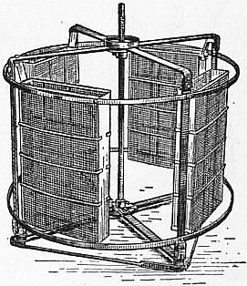
EQ-EXTRACTOR-01 · Máy quay mật ong 4 cầuFile:1911 Britannica - Bee - four-frame Extractor.pngNguồn mở — xem giấy phép trong manifestTrang nguồn
MAT-FEED-SUGAR · Đường tinh luyện bổ sung thức ănFile:Granulated White Sugar with Large Crystals, Bright Side Light.jpgNguồn mở — xem giấy phép trong manifestTrang nguồn
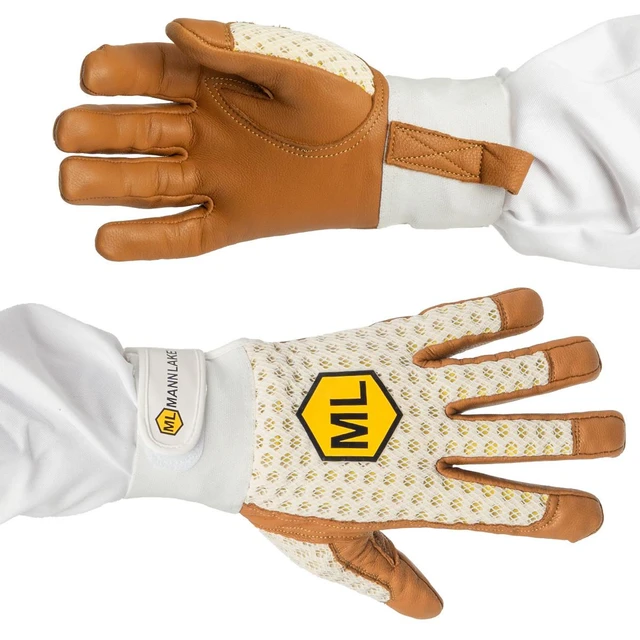
MAT-GLOVES-01 · Găng tay bảo hộTactical Pro Beekeeping GlovesẢnh nhà cung cấp — quyền sử dụng chưa xác minhTrang nguồn
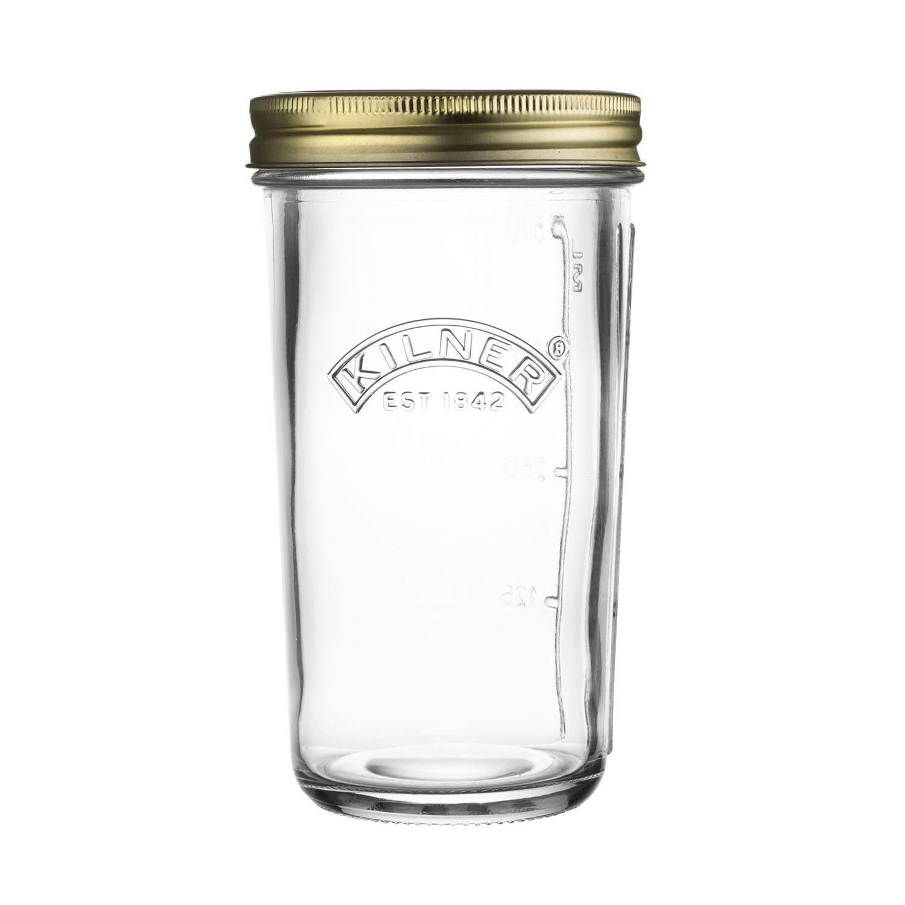
MAT-JAR-500 · Hũ thủy tinh 500 mlKilner 500 ml wide-mouth glass jarẢnh nhà cung cấp — quyền sử dụng chưa xác minhTrang nguồn
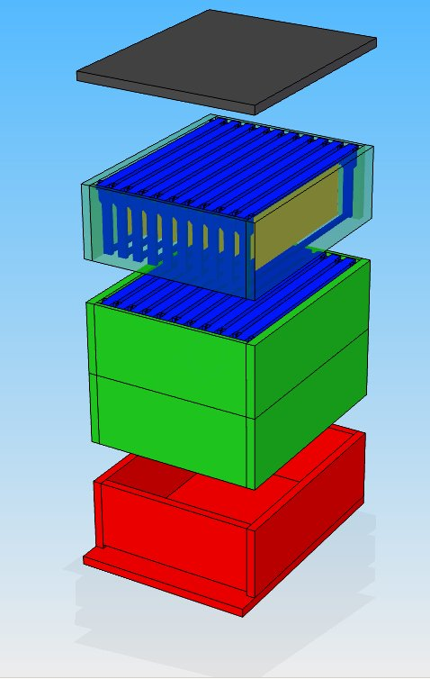
SURV-001 · Bộ thùng ong LangstrothFile:Langstroth-hive.jpgNguồn mở — xem giấy phép trong manifestTrang nguồn
SURV-002 · Thân thùng ong sâu / thùng nuôi ấu trùngAssembled 9 5/8" 10 Frame Deep Hive Body, Pallet of 78Ảnh nhà cung cấp — quyền sử dụng chưa xác minhTrang nguồn
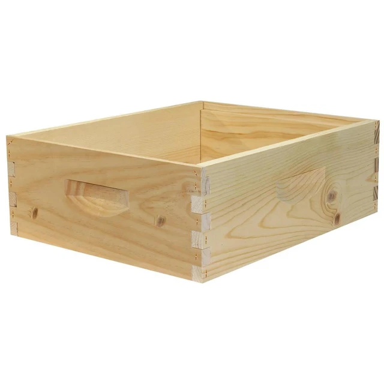
SURV-003 · Tầng mật cỡ trungAssembled 6 5/8" 10 Frame Medium Super, Pallet of 90Ảnh nhà cung cấp — quyền sử dụng chưa xác minhTrang nguồn
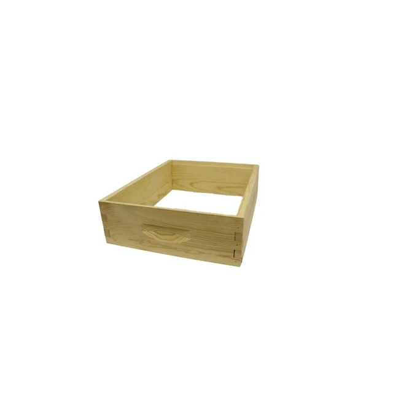
SURV-004 · Tầng mật cạn10 Frame - Unassembled 5 5/8" Commercial grade Shallow SuperẢnh nhà cung cấp — quyền sử dụng chưa xác minhTrang nguồn
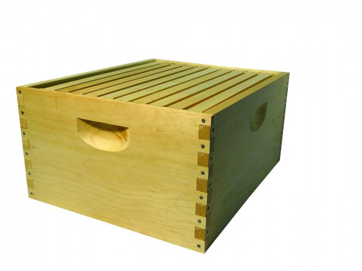
SURV-005 · Thân thùng ong 8 cầuAssembled 8 Frame Hive Body with Plastic Foundation - #A8F921Ảnh nhà cung cấp — quyền sử dụng chưa xác minhTrang nguồn
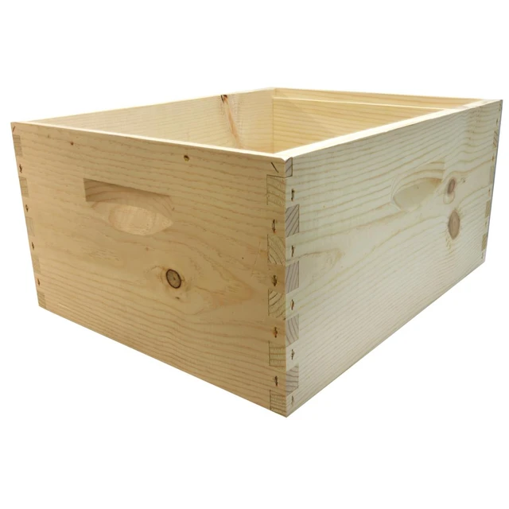
SURV-006 · Thân thùng ong 10 cầuAssembled 9 5/8" 10 Frame Deep Hive Body, Pallet of 78Ảnh nhà cung cấp — quyền sử dụng chưa xác minhTrang nguồn
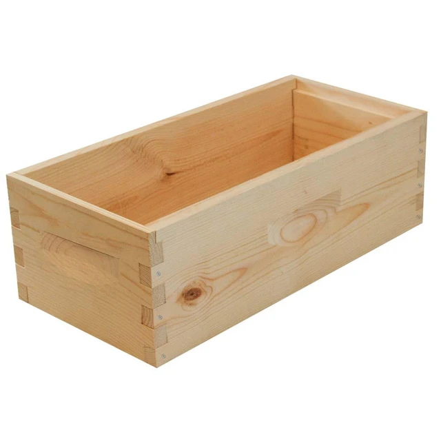
SURV-009 · Thùng nuc bằng gỗ6 5/8" Unassembled Nuc BoxẢnh nhà cung cấp — quyền sử dụng chưa xác minhTrang nguồn
SURV-010 · Thùng nuc bằng nhựaPro Nuc 5 Frame Plastic Nuc Box with Locking LidẢnh nhà cung cấp — quyền sử dụng chưa xác minhTrang nguồn
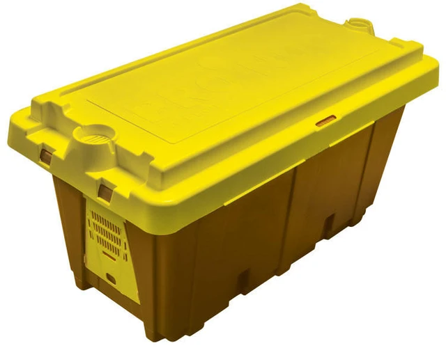
SURV-011 · Thùng nuc ProPro Nuc 5 Frame Plastic Nuc Box with Locking LidẢnh nhà cung cấp — quyền sử dụng chưa xác minhTrang nguồn
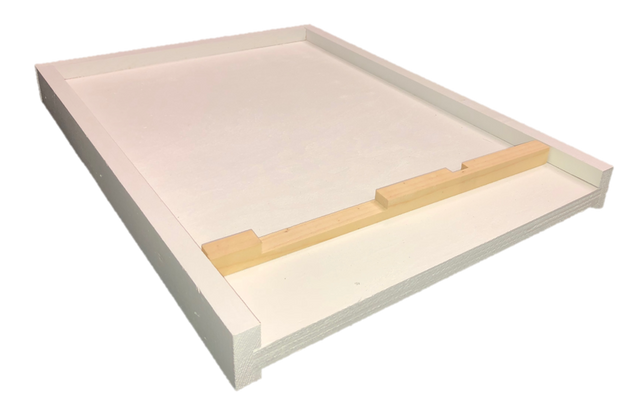
SURV-013 · Đáy thùng ong kínSolid Bottom BoardẢnh nhà cung cấp — quyền sử dụng chưa xác minhTrang nguồn
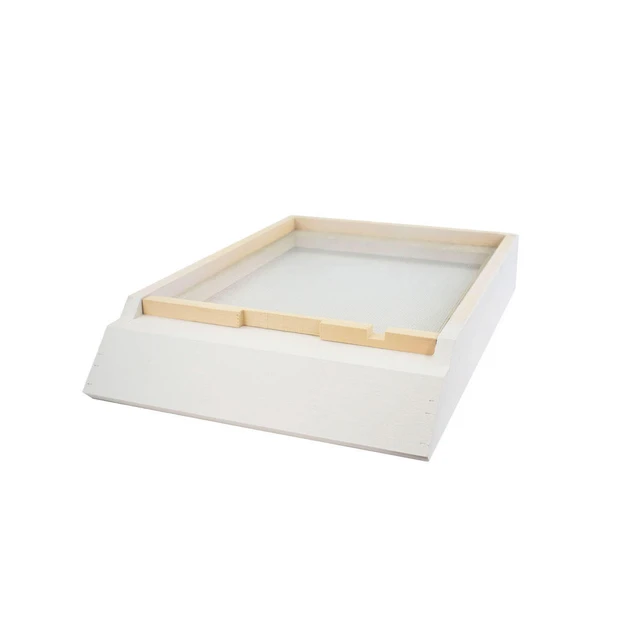
SURV-014 · Đáy thùng ong dạng lướiScreened Bottom BoardẢnh nhà cung cấp — quyền sử dụng chưa xác minhTrang nguồn
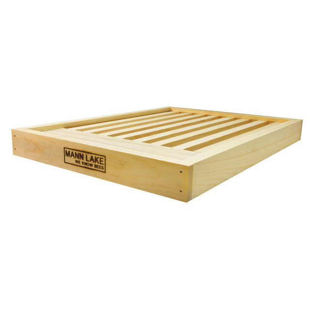
SURV-015 · Giá thanh thoáng đáy tổ8 Frame Slatted RackẢnh nhà cung cấp — quyền sử dụng chưa xác minhTrang nguồn
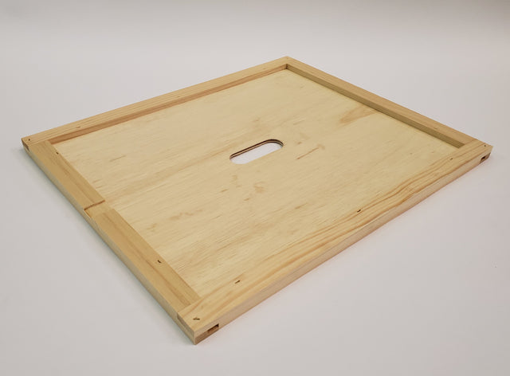
SURV-016 · Nắp trong thùng ongInner Cover - #W185Ảnh nhà cung cấp — quyền sử dụng chưa xác minhTrang nguồn
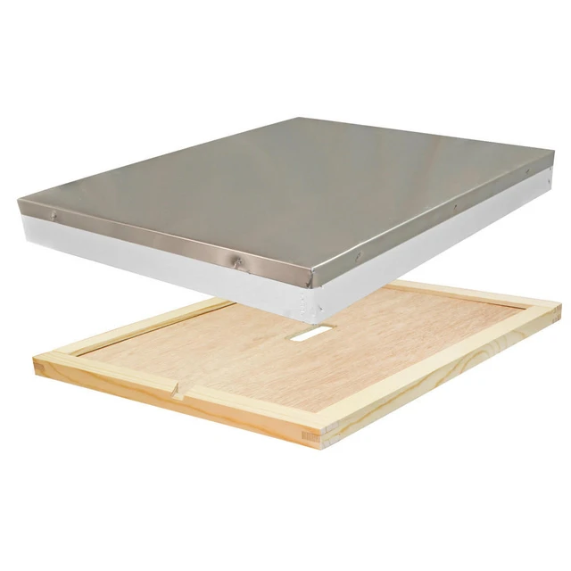
SURV-017 · Nắp chụp ngoài telescoping10 Frame Assembled Telescoping Cover - With Inner Cover - PaintedẢnh nhà cung cấp — quyền sử dụng chưa xác minhTrang nguồn
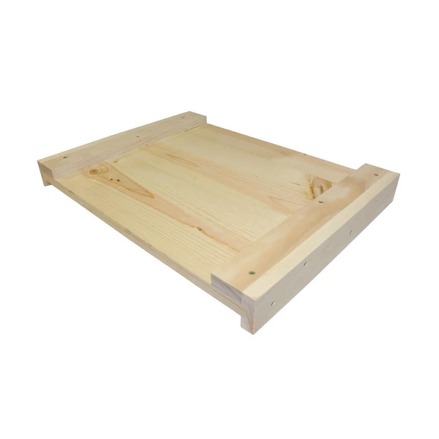
SURV-018 · Nắp thùng ong di chuyểnMigratory Top CoverẢnh nhà cung cấp — quyền sử dụng chưa xác minhTrang nguồn
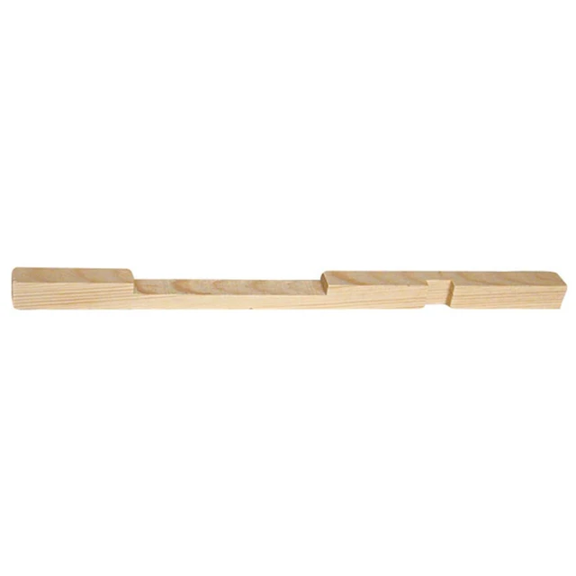
SURV-020 · Thanh thu hẹp cửa tổ10 Frame Entrance ReducerẢnh nhà cung cấp — quyền sử dụng chưa xác minhTrang nguồn
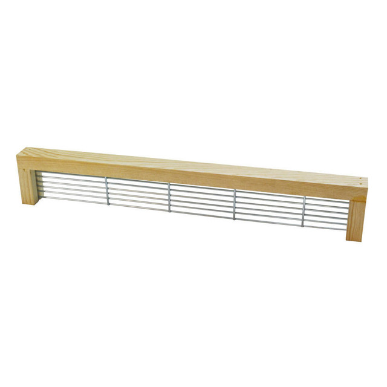
SURV-021 · Lưới/chắn cửa tổ giữ ong chúaEntrance Guard with ExcluderẢnh nhà cung cấp — quyền sử dụng chưa xác minhTrang nguồn
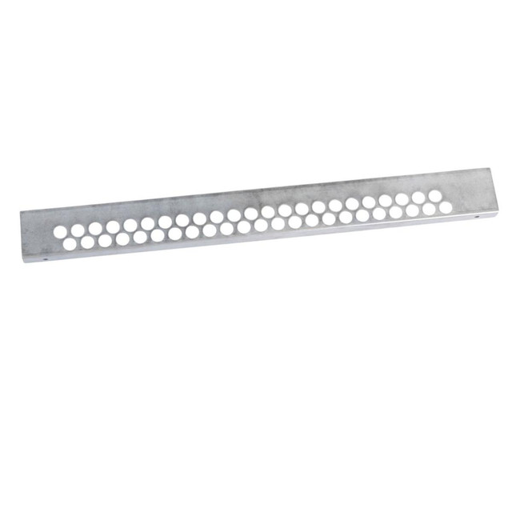
SURV-022 · Lưới/chắn chuột cửa tổ10 Frame Mouse GuardẢnh nhà cung cấp — quyền sử dụng chưa xác minhTrang nguồn
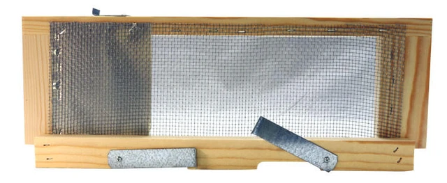
SURV-023 · Lưới chống cướp mật10 Frame Moving/Robbing ScreenẢnh nhà cung cấp — quyền sử dụng chưa xác minhTrang nguồn
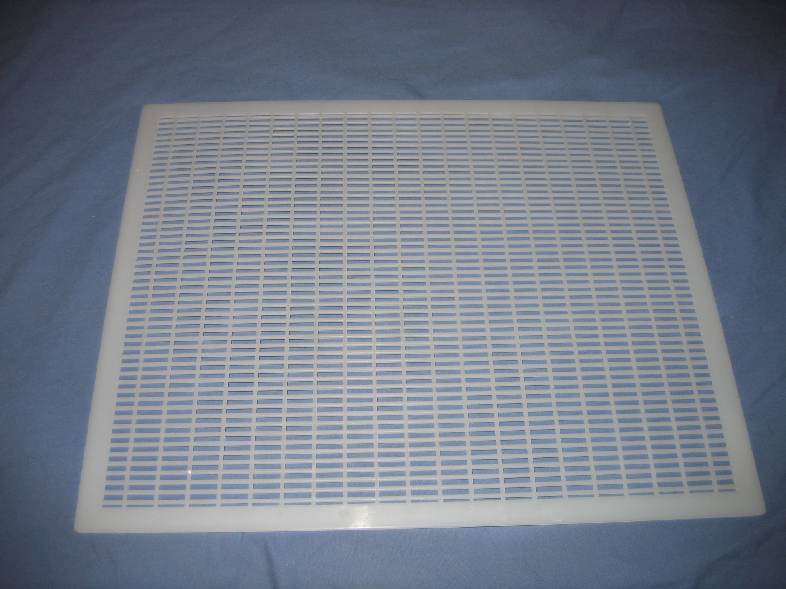
SURV-024 · Lưới chắn ong chúa bằng nhựaBeekeeping queen excluderNguồn mở — xem giấy phép trong manifestTrang nguồn
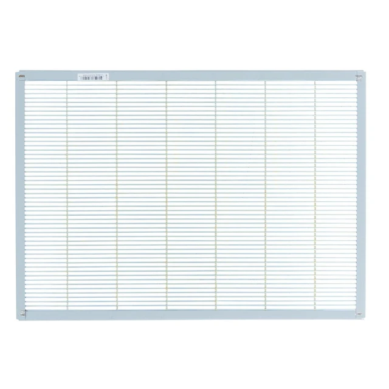
SURV-025 · Lưới chắn ong chúa bằng kim loạiMetal Queen ExcluderẢnh nhà cung cấp — quyền sử dụng chưa xác minhTrang nguồn
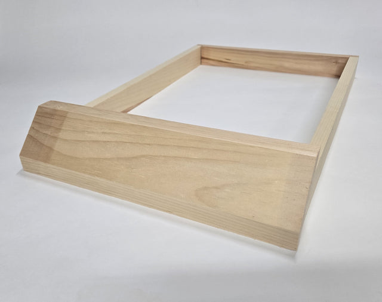
SURV-026 · Giá kê thùng ong5 Frame NUC Pine Hive Stand Select - #W201Ảnh nhà cung cấp — quyền sử dụng chưa xác minhTrang nguồn
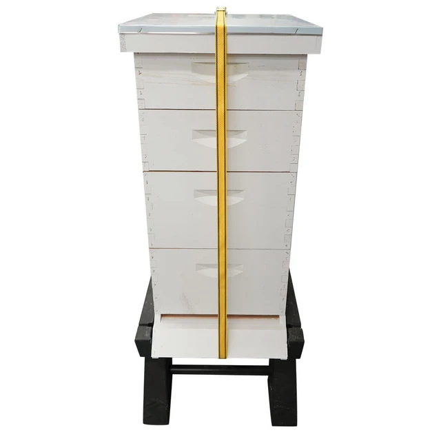
SURV-027 · Dây đai cố định thùng ongCamlock Tie Down Strap 10' (3.04 m)Ảnh nhà cung cấp — quyền sử dụng chưa xác minhTrang nguồn
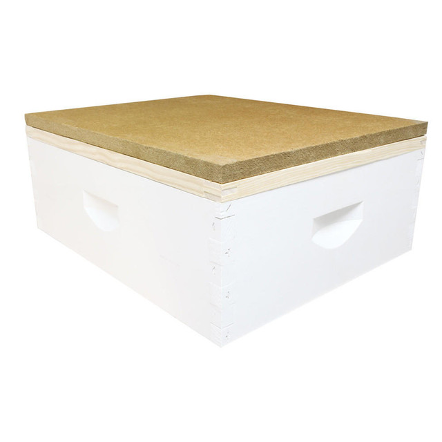
SURV-031 · Hộp cách nhiệt/hút ẩm mùa đông10 Frame Moisture BoardẢnh nhà cung cấp — quyền sử dụng chưa xác minhTrang nguồn
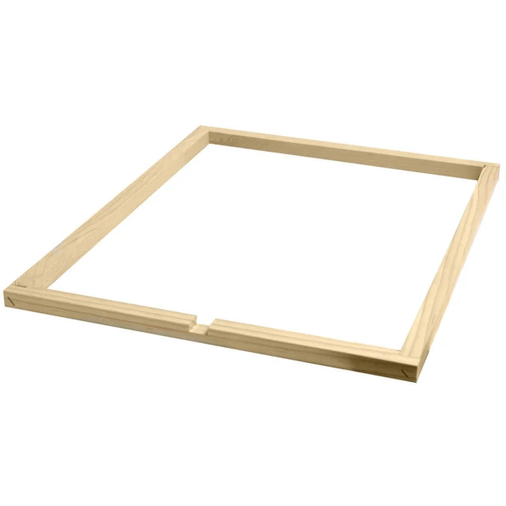
SURV-033 · Khung chêm thùng ongSpacer ShimẢnh nhà cung cấp — quyền sử dụng chưa xác minhTrang nguồn
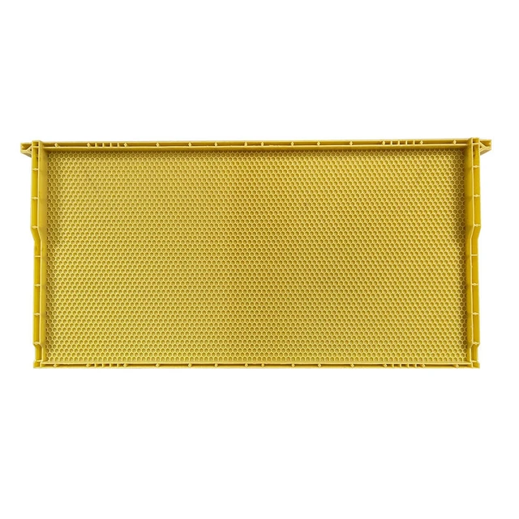
SURV-038 · Khung cầu bằng nhựa9 1/8" Waxed Standard Plastic Frame - NaturalẢnh nhà cung cấp — quyền sử dụng chưa xác minhTrang nguồn
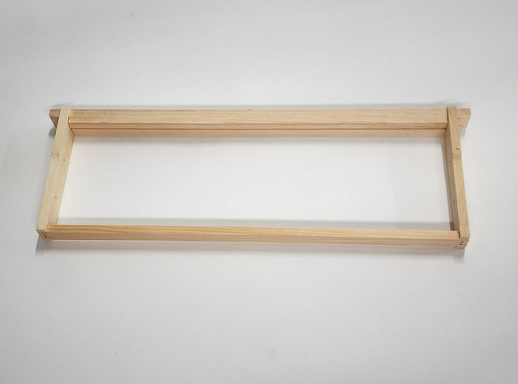
SURV-039 · Khung cầu lắp sẵnAssembled Medium 6 1/4" Frame Grooved Top and Grooved Bottom - #WA601GẢnh nhà cung cấp — quyền sử dụng chưa xác minhTrang nguồn
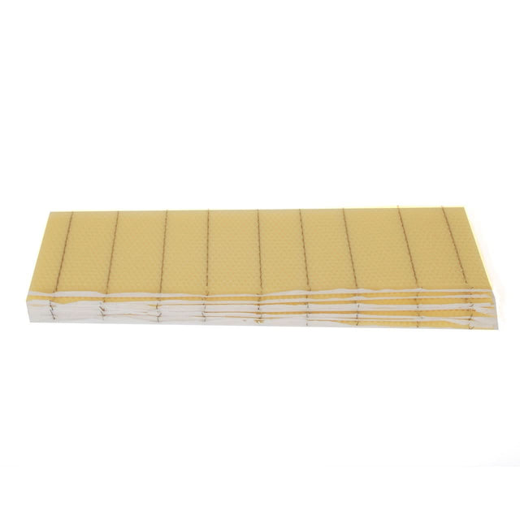
SURV-041 · Tấm nền cầu bằng sáp ongCrimp Wire Beeswax FoundationẢnh nhà cung cấp — quyền sử dụng chưa xác minhTrang nguồn
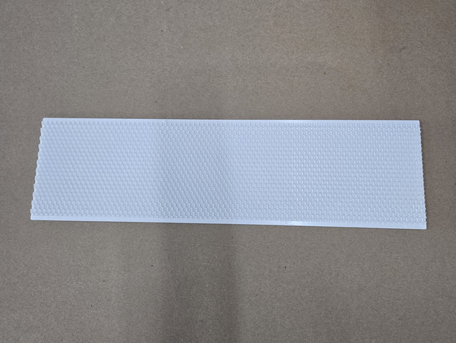
SURV-042 · Tấm nền cầu bằng nhựaPlastic Foundation- 4 5/8" Snap in- White UNWAXED- F573Ảnh nhà cung cấp — quyền sử dụng chưa xác minhTrang nguồn
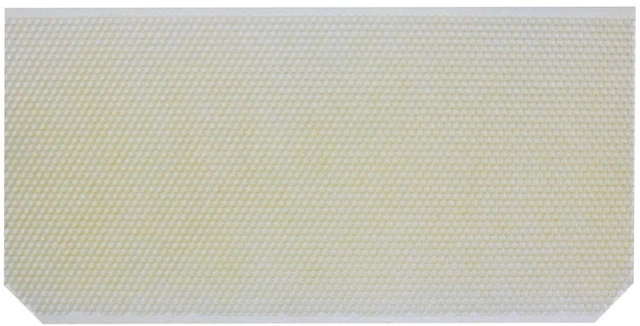
SURV-044 · Tấm nền Perma-Dent8 1/2" Waxed Perma-Dent® Foundation - Case of 100Ảnh nhà cung cấp — quyền sử dụng chưa xác minhTrang nguồn
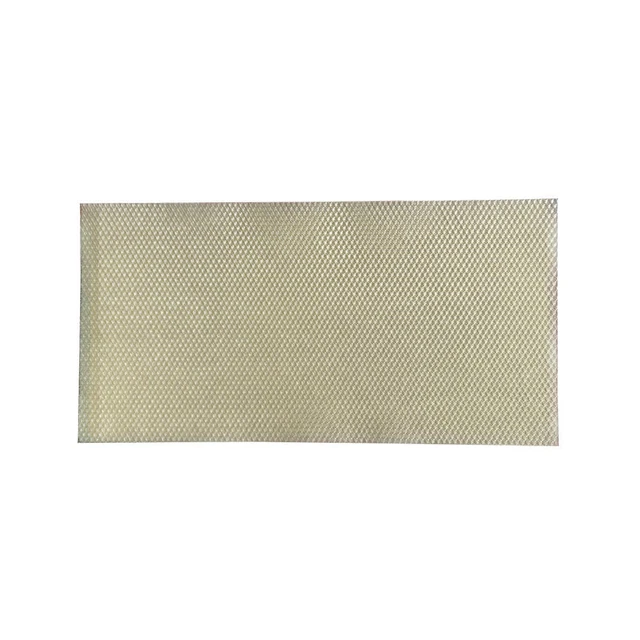
SURV-045 · Tấm nền ô nhỏ8 1/2" x 16 3/4" (21.59 cm x 42.55 cm) Small Cell (4.9 mm) Medium Brood FoundationẢnh nhà cung cấp — quyền sử dụng chưa xác minhTrang nguồn
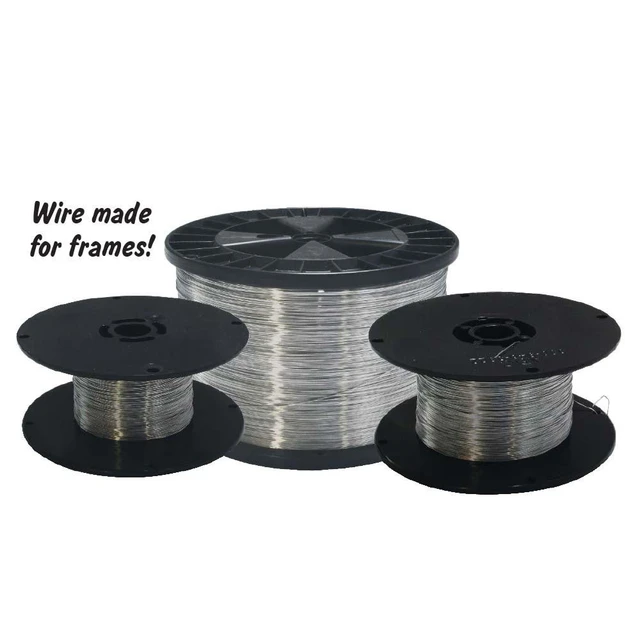
SURV-048 · Dây căng foundationFrame WireẢnh nhà cung cấp — quyền sử dụng chưa xác minhTrang nguồn
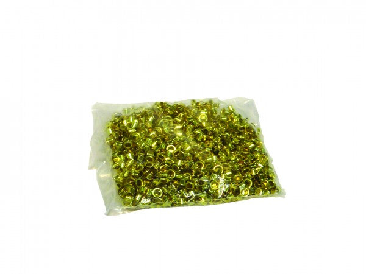
SURV-049 · Khoen đồng khung cầuFrame Eyelets - #M563Ảnh nhà cung cấp — quyền sử dụng chưa xác minhTrang nguồn
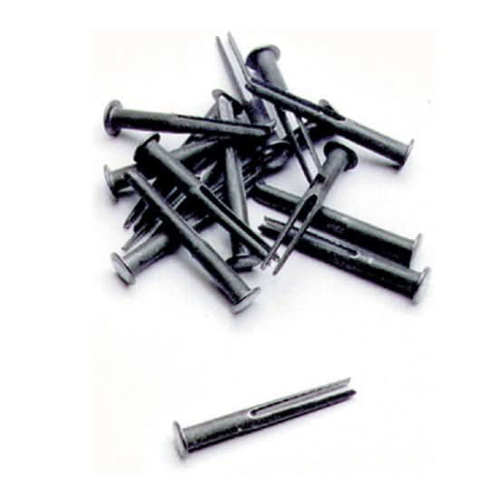
SURV-050 · Chốt đỡ foundationMetal Foundation Support PinsẢnh nhà cung cấp — quyền sử dụng chưa xác minhTrang nguồn
SURV-051 · Đinh lắp thùng/khung ong3/4" Frame Saver Nails, Approx 2000 Per 2 lbsẢnh nhà cung cấp — quyền sử dụng chưa xác minhTrang nguồn
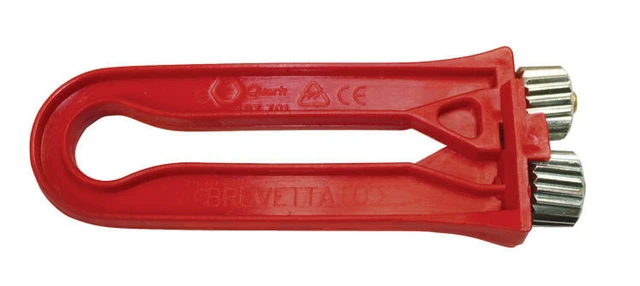
SURV-053 · Kìm tạo gợn dây khungFrame Wire CrimperẢnh nhà cung cấp — quyền sử dụng chưa xác minhTrang nguồn
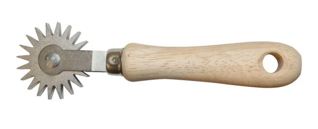
SURV-054 · Bánh xe ép dây vào sápSpur EmbedderẢnh nhà cung cấp — quyền sử dụng chưa xác minhTrang nguồn
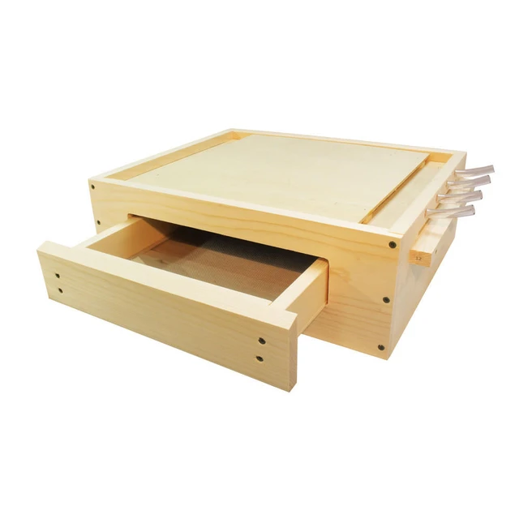
SURV-057 · Bẫy/khay thu phấn hoaSuperior Pollen TrapẢnh nhà cung cấp — quyền sử dụng chưa xác minhTrang nguồn
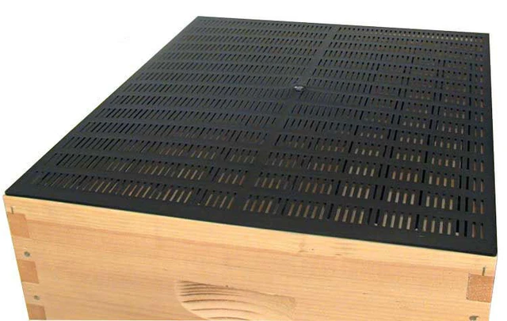
SURV-058 · Lưới/bẫy thu keo ong10 Frame Propolis TrapẢnh nhà cung cấp — quyền sử dụng chưa xác minhTrang nguồn
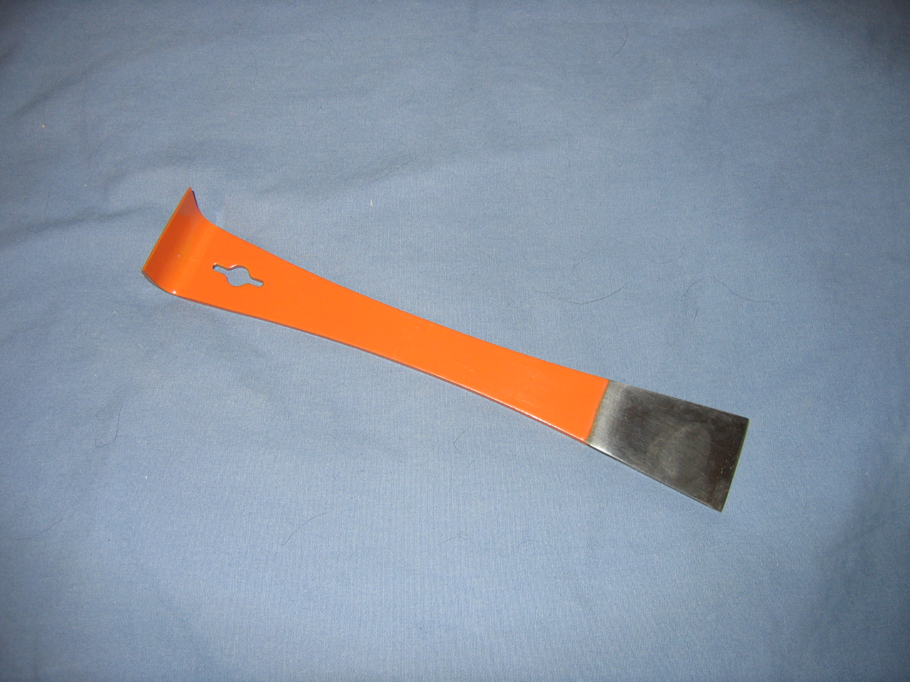
SURV-059 · Dụng cụ nạy thùng ongBeekeeping hive toolNguồn mở — xem giấy phép trong manifestTrang nguồn
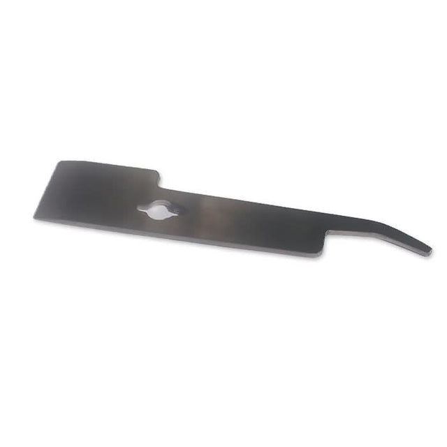
SURV-060 · Dụng cụ nạy cầu dạng móc JMini J-Hook Hive ToolẢnh nhà cung cấp — quyền sử dụng chưa xác minhTrang nguồn
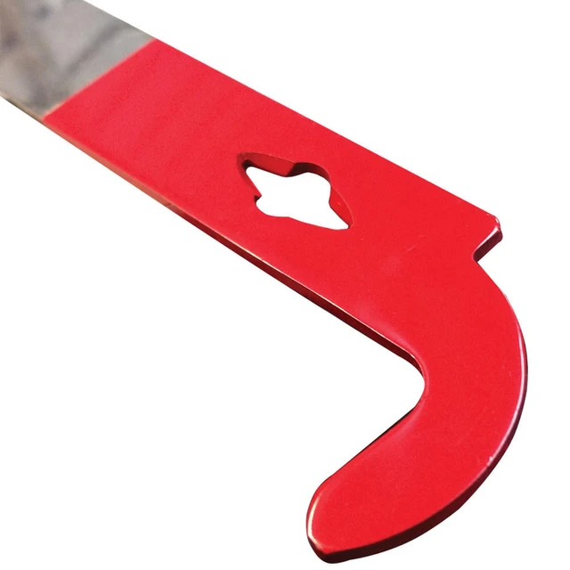
SURV-061 · Dụng cụ nâng và cạo10 1/2" Frame Lifter and Scraper Hive ToolẢnh nhà cung cấp — quyền sử dụng chưa xác minhTrang nguồn
SURV-084 · Quần bảo hộ nuôi ongBeekeeper Pants- #M518Ảnh nhà cung cấp — quyền sử dụng chưa xác minhTrang nguồn
SURV-085 · Găng tay da nuôi ongEconomy Cowhide Leather Beekeeping GlovesẢnh nhà cung cấp — quyền sử dụng chưa xác minhTrang nguồn
SURV-087 · Lưới che mặt dạng trònRound VeilẢnh nhà cung cấp — quyền sử dụng chưa xác minhTrang nguồn
SURV-088 · Lưới che mặt kiểu fencingFencing Veil for Super Suits and Jackets (Fits All Sizes) 1.0Ảnh nhà cung cấp — quyền sử dụng chưa xác minhTrang nguồn
SURV-089 · Lưới che mặt gọn nhẹA brush and a beekeeping veil hat close-up (46958677285)Nguồn mở — xem giấy phép trong manifestTrang nguồn
SURV-090 · Mũ nuôi ongA brush and a beekeeping veil hat close-upNguồn mở — xem giấy phép trong manifestTrang nguồn
SURV-091 · Ống tay bảo hộLong Vented Sleeves GlovesẢnh nhà cung cấp — quyền sử dụng chưa xác minhTrang nguồn
SURV-096 · Bình cho ăn Boardman tại cửa tổMann Lake Boardman Entrance FeederẢnh nhà cung cấp — quyền sử dụng chưa xác minhTrang nguồn
SURV-097 · Máng cho ăn đặt trên thùngTop Feeder InsertsẢnh nhà cung cấp — quyền sử dụng chưa xác minhTrang nguồn
SURV-098 · Máng cho ăn dạng khungFrame Feeder - 1.75 GallonẢnh nhà cung cấp — quyền sử dụng chưa xác minhTrang nguồn
SURV-099 · Xô/bình cho ong ăn2 Gallon Bucket FeederẢnh nhà cung cấp — quyền sử dụng chưa xác minhTrang nguồn
SURV-100 · Máng cho ăn Pro Feeder6 1/4" Pro Feeder - 3" Wide (Holds 1 Gallon)Ảnh nhà cung cấp — quyền sử dụng chưa xác minhTrang nguồn
SURV-103 · Đường sucroseFile:Granulated White Sugar with Large Crystals, Bright Side Light.jpgNguồn mở — xem giấy phép trong manifestTrang nguồn
SURV-104 · Siro đường cho ongBulk Syrup (Custom Freight Quote)Ảnh nhà cung cấp — quyền sử dụng chưa xác minhTrang nguồn
SURV-105 · Thức ăn lỏng Pro-SweetPro-Sweet™ Liquid FeedẢnh nhà cung cấp — quyền sử dụng chưa xác minhTrang nguồn
SURV-106 · Thức ăn mùa đông cho ongPro-Winter FeedẢnh nhà cung cấp — quyền sử dụng chưa xác minhTrang nguồn
SURV-107 · Kẹo/fondant cho ongHiveAlive Fondant PattiesẢnh nhà cung cấp — quyền sử dụng chưa xác minhTrang nguồn
SURV-108 · Bột thay thế phấn hoaBee Pro Pollen SubstituteẢnh nhà cung cấp — quyền sử dụng chưa xác minhTrang nguồn
SURV-110 · Thức ăn protein Ultra BeeUltra Bee High Protein Pollen Substitute Dry FeedẢnh nhà cung cấp — quyền sử dụng chưa xác minhTrang nguồn
SURV-111 · Thức ăn protein Bee-ProBee Pro Pollen SubstituteẢnh nhà cung cấp — quyền sử dụng chưa xác minhTrang nguồn
SURV-112 · Bánh thức ăn mùa đôngAP23 Winter Patty Carton of 40 - #C612Ảnh nhà cung cấp — quyền sử dụng chưa xác minhTrang nguồn
SURV-113 · Chất bổ sung dinh dưỡng cho ongProDFM Microbial Supplement for BeesẢnh nhà cung cấp — quyền sử dụng chưa xác minhTrang nguồn
SURV-115 · Bộ kiểm tra ve VarroaBee Squad Varroa Mite Testing KitẢnh nhà cung cấp — quyền sử dụng chưa xác minhTrang nguồn
SURV-116 · Dụng cụ kiểm tra Varroa EasyCheckVarroa EasyCheckẢnh nhà cung cấp — quyền sử dụng chưa xác minhTrang nguồn
SURV-117 · Tấm dính theo dõi veVarroa Screened Sticky BoardẢnh nhà cung cấp — quyền sử dụng chưa xác minhTrang nguồn
SURV-122 · Dải xử lý VarroaApistan Anti-Varroa Mite Strip, 10 packẢnh nhà cung cấp — quyền sử dụng chưa xác minhTrang nguồn
SURV-125 · Bẫy bọ tổ ong nhỏBeetle Trap & Mite Count TrayẢnh nhà cung cấp — quyền sử dụng chưa xác minhTrang nguồn
SURV-128 · Chế phẩm kiểm soát bướm sápPara-Moth Wax Moth ControlẢnh nhà cung cấp — quyền sử dụng chưa xác minhTrang nguồn
SURV-135 · Cuộn dây hàng rào điệnElectric fence wire dispenser on the CoulterNguồn mở — xem giấy phép trong manifestTrang nguồn
SURV-138 · Dụng cụ di ấu trùngMaster Queen Grafting ToolẢnh nhà cung cấp — quyền sử dụng chưa xác minhTrang nguồn
SURV-140 · Thanh gắn chén mũ chúaQueen Cell BarẢnh nhà cung cấp — quyền sử dụng chưa xác minhTrang nguồn
SURV-143 · Lồng ong chúaPlastic Queen Cage - Flip TopẢnh nhà cung cấp — quyền sử dụng chưa xác minhTrang nguồn
SURV-145 · Hộp vận chuyển mũ/ong chúaQueen Bee inside Transport CageNguồn mở — xem giấy phép trong manifestTrang nguồn
SURV-146 · Dụng cụ bắt ong chúaPipe Queen CatcherẢnh nhà cung cấp — quyền sử dụng chưa xác minhTrang nguồn
SURV-147 · Ống bắt ong chúaQueen Catcher Tube With Plunger - #Q101Ảnh nhà cung cấp — quyền sử dụng chưa xác minhTrang nguồn
SURV-149 · Lồng đánh dấu ong chúaQueen Marking Cage - #Q105Ảnh nhà cung cấp — quyền sử dụng chưa xác minhTrang nguồn
SURV-150 · Ván Cloake10 Frame Cloake BoardẢnh nhà cung cấp — quyền sử dụng chưa xác minhTrang nguồn
SURV-151 · Ván hai lưới10 Frame Double Screen BoardẢnh nhà cung cấp — quyền sử dụng chưa xác minhTrang nguồn
SURV-153 · Bẫy đàn ong bayBee Swarm TrapẢnh nhà cung cấp — quyền sử dụng chưa xác minhTrang nguồn
SURV-159 · Cửa thoát ong một chiều10 Frame Bee Escape Board - #W400Ảnh nhà cung cấp — quyền sử dụng chưa xác minhTrang nguồn
SURV-160 · Tấm đuổi ong khỏi tầng mậtSolar Fume BoardẢnh nhà cung cấp — quyền sử dụng chưa xác minhTrang nguồn
SURV-164 · Dao mở nắp mậtUncapping Knife - North American ModelẢnh nhà cung cấp — quyền sử dụng chưa xác minhTrang nguồn
SURV-165 · Dao mở nắp mật chạy điệnElectric Uncapping Knife - 120 vẢnh nhà cung cấp — quyền sử dụng chưa xác minhTrang nguồn
SURV-166 · Nĩa/cào mở nắp mậtUncapping ForkẢnh nhà cung cấp — quyền sử dụng chưa xác minhTrang nguồn
SURV-167 · Nĩa mở nắp mậtUncapping ForkẢnh nhà cung cấp — quyền sử dụng chưa xác minhTrang nguồn
SURV-168 · Bồn/khay mở nắp mậtBeekeeping uncapping tank Delta Mec 50 by Martini Alfredo SpA Italy circa 2000 view 2Nguồn mở — xem giấy phép trong manifestTrang nguồn
SURV-174 · Máy quay mật quay tayCirca 1990 manual honey extractor by Joel Svenssons Vaxfabrik AB Aengelholm Sweden view 1Nguồn mở — xem giấy phép trong manifestTrang nguồn
SURV-175 · Máy quay mật chạy điệnmy new toy - electric honey extractorNguồn mở — xem giấy phép trong manifestTrang nguồn
SURV-176 · Máy quay mật hướng tâm24 Frame Radial Extractor with AugerẢnh nhà cung cấp — quyền sử dụng chưa xác minhTrang nguồn
SURV-177 · Máy quay mật tiếp tuyếnManual tangential honey extractorẢnh nhà cung cấp — quyền sử dụng chưa xác minhTrang nguồn
SURV-181 · Chân/giá máy quay mậtExtractor/Pail StandẢnh nhà cung cấp — quyền sử dụng chưa xác minhTrang nguồn
SURV-184 · Lưới/rây lọc mậtFilter for Stocking StrainerẢnh nhà cung cấp — quyền sử dụng chưa xác minhTrang nguồn
SURV-186 · Túi lọc mật3" Reusable In-line Filter BagẢnh nhà cung cấp — quyền sử dụng chưa xác minhTrang nguồn
SURV-188 · Bồn lắng mậtLyson 50L honey settling tankẢnh nhà cung cấp — quyền sử dụng chưa xác minhTrang nguồn
SURV-189 · Bồn chứa mậtEarly 2000s 30 litre plastic honey storage tank with honey gate by MS Biredskapsfabriken Toereboda SwedenNguồn mở — xem giấy phép trong manifestTrang nguồn
SURV-190 · Bồn đóng chai có gia nhiệt32 Gallon Heated Bottling TankẢnh nhà cung cấp — quyền sử dụng chưa xác minhTrang nguồn
SURV-191 · Van xả mậtPlastic Honey Gate - #M545Ảnh nhà cung cấp — quyền sử dụng chưa xác minhTrang nguồn
SURV-192 · Máy bơm mậtHoney & Syrup PumpẢnh nhà cung cấp — quyền sử dụng chưa xác minhTrang nguồn
SURV-198 · Van đường mậtStainless Honey Gate ValveẢnh nhà cung cấp — quyền sử dụng chưa xác minhTrang nguồn
SURV-205 · Cân điện tửsoehnle digital kitchen scaleNguồn mở — xem giấy phép trong manifestTrang nguồn
SURV-206 · Hũ thủy tinh tròn đựng mậtRound glass honey jarẢnh nhà cung cấp — quyền sử dụng chưa xác minhTrang nguồn
SURV-208 · Hũ Muth đựng mậtGlass Muth Jar 1 lb (453.59g) - 12 packẢnh nhà cung cấp — quyền sử dụng chưa xác minhTrang nguồn
SURV-210 · Chai mật hình gấuSqueeze Bear BottlesẢnh nhà cung cấp — quyền sử dụng chưa xác minhTrang nguồn
SURV-211 · Chai bóp nhựa2lb. Plastic Squeeze Honey Bee Bottle without Lids 12 pkẢnh nhà cung cấp — quyền sử dụng chưa xác minhTrang nguồn
SURV-212 · Xô đựng mật5 Gallon Bottling Pail with Honey Gate and LidẢnh nhà cung cấp — quyền sử dụng chưa xác minhTrang nguồn
SURV-213 · Can/bình đựng mậtHoneycomb JugẢnh nhà cung cấp — quyền sử dụng chưa xác minhTrang nguồn
SURV-217 · Màng co niêm phongClear Heat Shrink Band for 4oz Muth Jars - 250 PackẢnh nhà cung cấp — quyền sử dụng chưa xác minhTrang nguồn
SURV-218 · Tem nhãn mật ongRound Jar Labels for Honey Bottles, 250 pkẢnh nhà cung cấp — quyền sử dụng chưa xác minhTrang nguồn
SURV-224 · Khay/nồi chứa sáp4 lb Beeswax Candle Melting PotẢnh nhà cung cấp — quyền sử dụng chưa xác minhTrang nguồn
SURV-235 · Khúc xạ kế đo mật1990s portable German Graze WYM 5 honey refractometerNguồn mở — xem giấy phép trong manifestTrang nguồn
TOOL-SMOKER-01 · Bình tạo khói inox4" x 7" Economy Stainless Steel Smoker with ShieldẢnh nhà cung cấp — quyền sử dụng chưa xác minhTrang nguồn
SURV-019 · Nắp ngoài bằng nhựa10 Frame Outer Cover - PlasticẢnh nhà cung cấp — quyền sử dụng chưa xác minhTrang nguồn
SURV-028 · Kẹp pallet thùng ongU Pallet ClipsẢnh nhà cung cấp — quyền sử dụng chưa xác minhTrang nguồn
SURV-029 · Lưới bao thùng ongHive NetẢnh nhà cung cấp — quyền sử dụng chưa xác minhTrang nguồn
SURV-043 · Tấm nền Rite-Cell8 1/2" Waxed Rite-Cell Foundation, Natural or Black, Case of 10Ảnh nhà cung cấp — quyền sử dụng chưa xác minhTrang nguồn
SURV-109 · Bánh thức ăn proteinUltra Bee High Protein Pollen Substitute Patties, 10 lbẢnh nhà cung cấp — quyền sử dụng chưa xác minhTrang nguồn
SURV-118 · Khay đếm veBeetle Trap & Mite Count TrayẢnh nhà cung cấp — quyền sử dụng chưa xác minhTrang nguồn
SURV-034 · Tầng thông gióVented SuperẢnh nhà cung cấp — quyền sử dụng chưa xác minhTrang nguồn
SURV-040 · Khung cầu chưa lắp9 1/8" Deep Unassembled Frames - Groove Top and Groove Bottom with Pre-drilled Holes in Endbars - 10 PackẢnh nhà cung cấp — quyền sử dụng chưa xác minhTrang nguồn
SURV-052 · Ghim/đinh ghim lắp thùng ong3/4" Frame Saver Nails, Approx 2000 Per 2 lbsẢnh nhà cung cấp — quyền sử dụng chưa xác minhTrang nguồn
SURV-066 · Bình phun đa dụngAll-Purpose SprayerẢnh nhà cung cấp — quyền sử dụng chưa xác minhTrang nguồn
SURV-123 · Chế phẩm Varroa nền thymolApiLife Var - 10 PackẢnh nhà cung cấp — quyền sử dụng chưa xác minhTrang nguồn
SURV-163 · Dụng cụ mang tầng mậtSingle Hive / Super CarrierẢnh nhà cung cấp — quyền sử dụng chưa xác minhTrang nguồn
SURV-187 · Giá đỡ bộ lọc xôPail Filter StandẢnh nhà cung cấp — quyền sử dụng chưa xác minhTrang nguồn
SURV-200 · Thiết bị chiết rót mật thủ côngManual Honey Dispenser W2045Ảnh nhà cung cấp — quyền sử dụng chưa xác minhTrang nguồn
SURV-204 · Phới/thìa trộn thực phẩmHoney Bee Mixing SpoonẢnh nhà cung cấp — quyền sử dụng chưa xác minhTrang nguồn
SURV-207 · Hũ thủy tinh vuông đựng mậtSquare Glass Honey Jars 2 1/2 lb (1.13 kg) - 12 packẢnh nhà cung cấp — quyền sử dụng chưa xác minhTrang nguồn
SURV-209 · Hũ nhựa đựng mậtPlastic Queenline Honey JarsẢnh nhà cung cấp — quyền sử dụng chưa xác minhTrang nguồn
SURV-214 · Nắp nhựa chai/hũPlastic Threaded Lids with LinersẢnh nhà cung cấp — quyền sử dụng chưa xác minhTrang nguồn
SURV-215 · Nắp kim loạiGold Metal Lug LidsẢnh nhà cung cấp — quyền sử dụng chưa xác minhTrang nguồn
SURV-035 · Khung cầu gỗ cỡ sâu9 1/8" Assembled Frames with Waxed Rite-Cell Foundation, SingleẢnh nhà cung cấp — quyền sử dụng chưa xác minhTrang nguồn
SURV-036 · Khung cầu gỗ cỡ trung6 1/4" Assembled Frames with Waxed Rite-Cell Foundation, SingleẢnh nhà cung cấp — quyền sử dụng chưa xác minhTrang nguồn
SURV-037 · Khung cầu cỡ cạn5 3/8" Shallow Unassembled Frames - Wedge Top and Groove Bottom with Pre-drilled Holes in Endbars - 10 PackẢnh nhà cung cấp — quyền sử dụng chưa xác minhTrang nguồn
SURV-069 · Nhiên liệu hun khói bằng cotton1/2 lb Smoker FuelẢnh nhà cung cấp — quyền sử dụng chưa xác minhTrang nguồn
SURV-185 · Vải lọc mậtPolyester Strainer Cloth, Per YardẢnh nhà cung cấp — quyền sử dụng chưa xác minhTrang nguồn
SURV-073 · Hộp dụng cụ trại ongHEXA Wooden Beekeeper ToolboxẢnh nhà cung cấp — quyền sử dụng chưa xác minhTrang nguồn
SURV-075 · Xe đẩy thùng ongBeehive TrolleyẢnh nhà cung cấp — quyền sử dụng chưa xác minhTrang nguồn
SURV-076 · Xe đẩy tầng mậtHoney Supers Trolley Tray on Castor WheelsẢnh nhà cung cấp — quyền sử dụng chưa xác minhTrang nguồn
SURV-080 · Thùng/giá mang khung cầuFrame Transport Box for Dadan FramesẢnh nhà cung cấp — quyền sử dụng chưa xác minhTrang nguồn
SURV-101 · Máng cho thức ăn thay thế phấn hoaPollen Patty and Sugar Brick Internal Feeder TrayẢnh nhà cung cấp — quyền sử dụng chưa xác minhTrang nguồn
SURV-127 · Chế phẩm xử lý bọ tổ ong nhỏCheckMite+ Bee Hive Pest Control StripẢnh nhà cung cấp — quyền sử dụng chưa xác minhTrang nguồn
SURV-161 · Tấm đuổi ong Turbo10-Frame Turbo Fume Board UnitẢnh nhà cung cấp — quyền sử dụng chưa xác minhTrang nguồn
SURV-173 · Giá giữ cầu khi mở nắpFrame Stand for Uncapping TableẢnh nhà cung cấp — quyền sử dụng chưa xác minhTrang nguồn
SURV-126 · Tấm chắn bọ tổ ongGuardian Bee Hive EntranceẢnh nhà cung cấp — quyền sử dụng chưa xác minhTrang nguồn
MAT-TREAT-01 · Dung dịch vệ sinh thùng ongẢnh minh họa đúng loại dung dịch; chưa xác nhận nhãn hàng của vật tư trong khoẢnh nhà cung cấp — quyền sử dụng chưa xác minhTrang nguồn